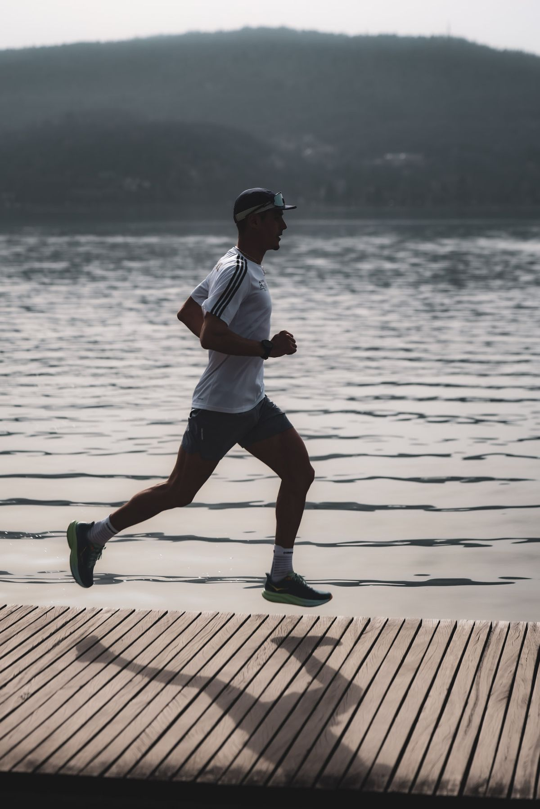
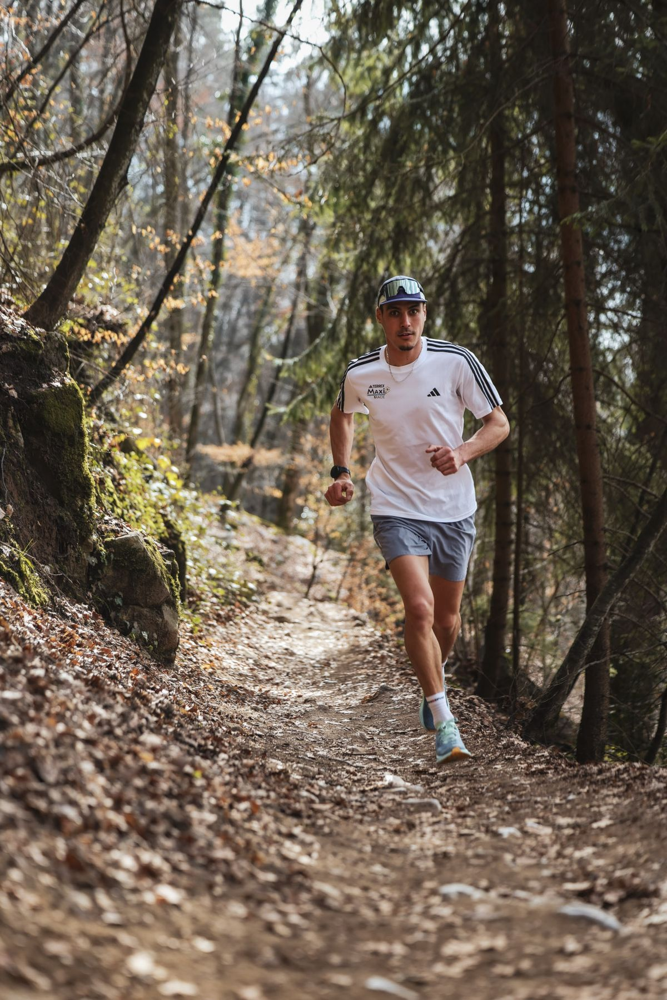
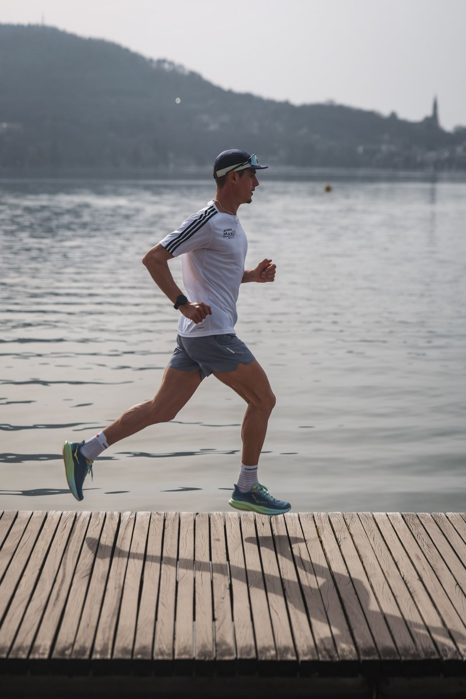

Courir longtemps, c’est se retrouver face à soi-même : l’euphorie, la souffrance, la frustration. Les épreuves d’endurance m’ont toujours attiré.
Cela fait écho à mon passé, à mes échecs et au grave accident de 2023. Je dois constamment m’adapter pour donner le meilleur de moi-même. Je cours pour garder le cap sur une vie où je me sens épanoui, fort physiquement comme mentalement. Grâce à ce sport, j’apprends chaque jour un peu plus sur moi, et c’est ainsi que je deviens une meilleure version de moi-même.
Il y a beaucoup à maîtriser, et ça aussi, ça m’attire : l’entraînement, la récupération, le sommeil, la nutrition, l’altitude, la météo… Mon ancien métier m’a appris la rigueur du geste précis, je la retrouve ici. Chaque détail compte, et chaque progrès est une victoire.
« La seule personne à dépasser est celle que j’étais hier. »


Retrouvez mes résultats officiels sur les classements de référence du trail.
Courir ensemble.
Je m’entraîne chaque semaine pour performer, et je raconte ce parcours à travers la montagne et le trail. Si vous partagez ces valeurs de dépassement de soi et de résilience, je serais heureux de vous compter parmi mes partenaires.